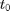
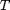
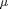

Simlator of Correlated Cascades Model
This function simulates the events from  till  using the model and events it accepts as input.
INPUTS:
- model: a model containing the a and  and structure
- events: the set of events
- t: the time for which we want to calculate Intensity
- n: the number of first events we use to calculate the intensity at t
OUTPUTS:
- events: an struct containing the times, nodes and products of generated events
function events = cc_simulator(model, t0, T, exp_coeff, events, w, g)
if nargin < 6 w = 1; end if nargin < 7 g = @(x,w) w*exp(-w*x); end
It can use some events to continue simulation or generate new events without history
if nargin < 5 events = struct; init_size = 10000; events.times = zeros(init_size,1); events.nodes = zeros(init_size,1); events.products = zeros(init_size,1); n = 0; else n = length(find(events.times < t0)); end t = t0; iter = 0; while t < T
Calculate the intensity of each node
I = HawkesIntensity(model, events, t, n, w, g);
Calculate the overal intensity of each node to generate events
u_Is = sum(I,2);
sumI = sum(u_Is);
t = t+exprnd(1./sumI);
iter = iter + 1;
if(mod(iter,100)==0)
disp(['(events so far:', num2str(n),', time so far:', num2str(t), ')']);
end
if(t>=T)
break;
end
Is = HawkesIntensity(model, events, t, n, w, g);
sumIs = sum(sum(Is,2));
u = rand();
decides to generate event or not
if(u*sumI<sumIs)
sample the user generated the event
d = sample_user(Is);
sample the product
p = sample_product(Is(d,:)', exp_coeff);
if n == length(events.times)
tmp = events.times;
events.times = zeros(2*n,1);
events.times(1:n) = tmp;
tmp = events.nodes;
events.nodes = zeros(2*n,1);
events.nodes(1:n) = tmp;
%
tmp = events.products;
events.products = zeros(2*n,1);
events.products(1:n) = tmp;
end
n = n + 1;
events.times(n) = t;
events.nodes(n) = d;
events.products(n) = p;
end
end
events.times = events.times(1:n);
events.nodes = events.nodes(1:n);
events.products = events.products(1:n);
end